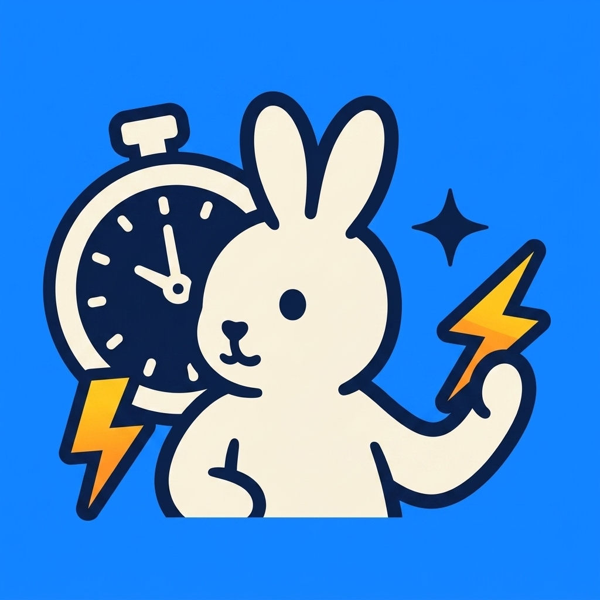
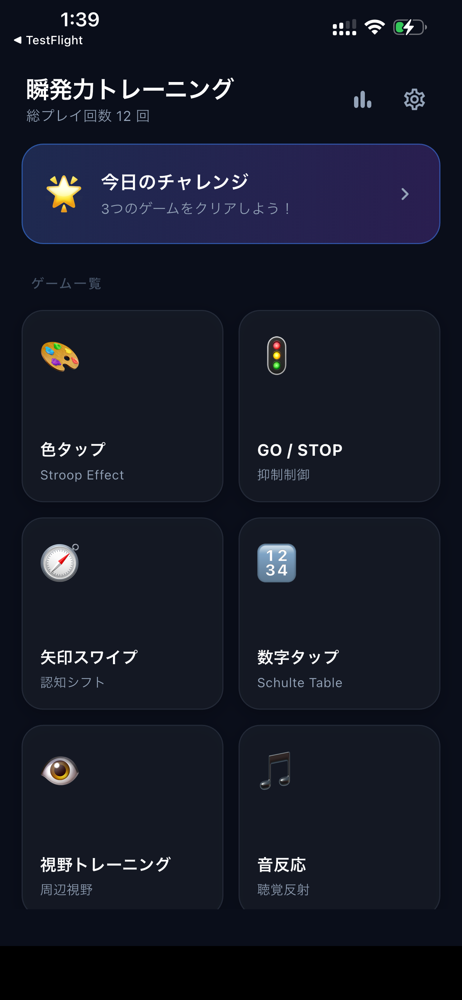
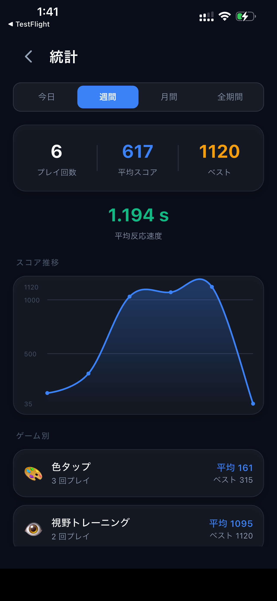
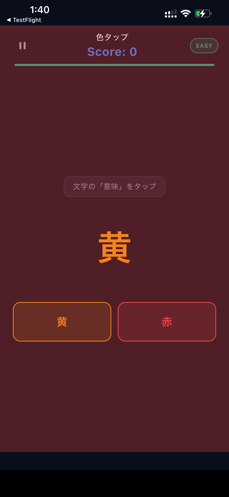

Push your brain and reflexes to the limit in just a few minutes a day 1日わずか数分で、脳と反射神経を限界まで鍛える
Download on the App Store App StoreでダウンロードReflex Training is a brain and action game designed to sharpen your cognitive functions and reaction speed in just a few minutes a day. Test your pure, raw reaction time and decision-making skills!
瞬発力トレーニング (Reflex Training)は、1日わずか数分のプレイで、脳の認知機能や反応速度を鍛えることができる脳トレ・アクションアプリです。 eスポーツや実際のスポーツ前のウォームアップ、あるいは日々のスキマ時間の暇つぶしにも最適です。昨日より速い自分を手に入れましょう！
Challenge your limits with 6 highly intuitive games including Color Tap, GO/STOP, Number Tap, Arrow Swipe, Peripheral Vision, and Sound Reaction. From visual search to auditory reflexes, train every aspect of your reaction speed.
「カラータップ」「GO / STOP」「ナンバータップ」「アロースワイプ」「周辺視野」「音反応」の6種類のミニゲームを収録。視覚、聴覚、空間認識、認知の柔軟性など、あらゆる反射神経を極限まで引き出します。

Keep track of your past scores and average reaction times in milliseconds. Beautifully visualized charts allow you to monitor your improvement over time at a glance.
過去のスコアや平均反応速度（ミリ秒単位）の推移を美しいグラフで視覚化。プレイごとの成績が自動で記録されるため、日々の成長がひと目で分かり、モチベーションの維持に繋がります。

Complete daily tasks to build your streak. With 3 difficulty levels (Easy, Normal, Hard) and a sleek dark mode design, the app offers an immersive and distraction-free experience for everyone from beginners to superhuman players.
毎日提示されるデイリー課題をクリアして、連続達成日数（ストリーク）を伸ばしましょう！目に優しいダークモードの洗練されたUIと、初心者から超人レベルまで選べる3つの難易度で、毎日のトレーニングをサポートします。

reflex, brain training, reaction, esports, focus, mini games, cognitive, speed, sports, peripheral vision
反射神経, 脳トレ, 動体視力, eスポーツ, トレーニング, ミニゲーム, 反応速度, 周辺視野, 集中力, スポーツ, 判断力, 認知機能, 瞬発力